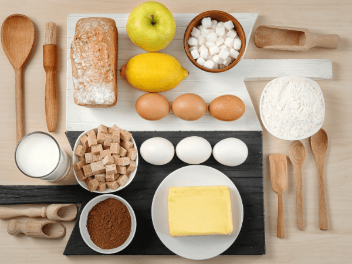

🍤 Ingredientes
- 300 gr Gambas
- 300 ml Leche entera
- 50 ml Crema de leche
- 200 ml Caldo de pescado
- 50 gr Mantequilla
- 80 gr Harina común
- 30 ml Aceite de oliva
- 2 dientes Ajo morado
- 1 c.s. Perejil picado
- 1 c.n. Sal, pimienta y nuez moscada
- 1 hoja Gelatina
- 2 Huevos enteros
- 150 gr Harina común
- 150 gr Pan rallado
- 1 Yema de huevo
- 100 ml Aceite de gambas
- 1 c.n. Sal
- 1 c.n. Chips de ajo
- Hierbas para decorar

Pasos
- Primero se hacen gambas al ajillo y se reserva su aceite para dar sabor.
- Con las cabezas y pieles se elabora un caldo y una mantequilla de gamba, que se usan para la bechamel.
- A la masa se le incorporan las gambas picadas, especias y perejil, y luego se deja reposar en la nevera.
- Al día siguiente, se forman las croquetas, se empanan al estilo clásico (harina, huevo y pan rallado) y se fríen hasta dorarse.
- Finalmente, se sirven decoradas con emulsión de gamba, chips de ajo y hierbas frescas.